Data Analytics · Business Insight · Digital Skills
Data Analysis Portfolio
Practical work in data preparation, analysis and visual reporting, with a focus on turning structured information into clear findings that can support better operational and business decisions.
This section brings together my data analytics capstone and developing technical practice. It complements my HealthTech Business Analysis case studies while giving data preparation, spreadsheet analysis, dashboarding and database learning their own space.
Featured capstoneExcel dashboard
ApexPharma Logistics Ltd.
Pharmaceutical Sales & Performance Analysis
10Alytics · Health Analytics Excel Capstone
Analysed a supplied pharmaceutical sales dataset containing 350 transactions and 14 fields. The work focused on data cleaning, validation, sales performance analysis and an interactive management dashboard.
$169.41MDataset revenue
44,168Units sold
350Transactions
Used Excel and Power Query to review duplicates, clean text, standardise categories, handle missing information and check data types. PivotTables and dashboard visuals supported analysis by month, product category, distributor and region.
10Alytics · Health AnalysisPower Query · Data cleaning
MediCore Health Distribution Ltd.
Data Cleaning, Preparation & Dashboard Development
10Alytics Health Analysis training · Facilitator: Karen
MediCore Health Distribution Ltd. is a pharmaceutical distribution company supplying medicines and healthcare products to hospitals, pharmacies, clinics and other healthcare providers. The practice dataset contains sales records across distributors, customers, regions, products, sales representatives and teams.
Project focus
My work progressed from reviewing the original sales records to cleaning and transforming the dataset in Excel Power Query, reviewing the cleaned table and developing a sales dashboard. The dashboard work was started, but the presentation report was not completed.
Data preparation work
Imported and reviewed the raw sales dataset in Power Query.
Inspected column names, field contents and data types.
Applied data-cleaning steps to standardise and structure the records.
Reviewed the resulting cleaned table and loaded the prepared data back into Excel.
Developed a MediCore sales dashboard using the prepared data.
Evidence and scope
The portfolio evidence follows the work from company context and original data through Power Query, the cleaned table and the dashboard developed during the exercise. The dashboard is evidence of development work; the accompanying presentation/report was not completed.
Microsoft ExcelPower QueryRaw data reviewData cleaningData preparationDashboard development
MediCore project evidence
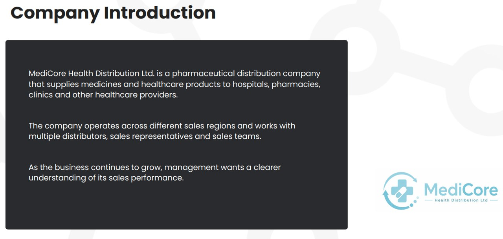
01 · Company introduction
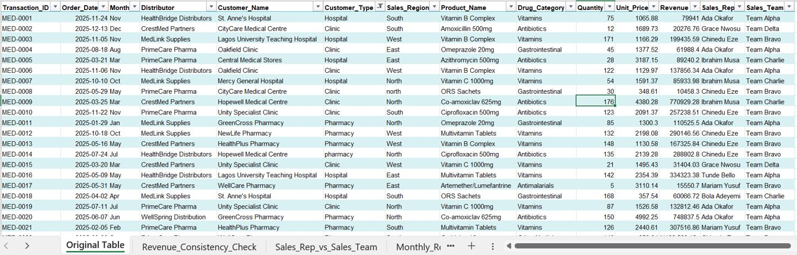
02 · Original raw dataset
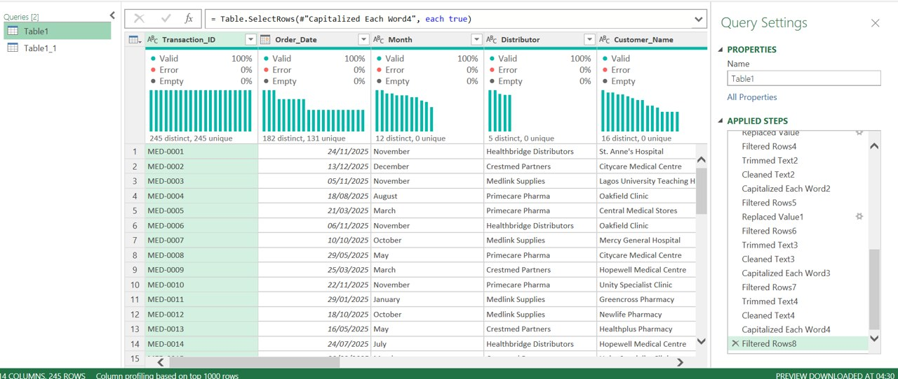
03 · Power Query cleaning process
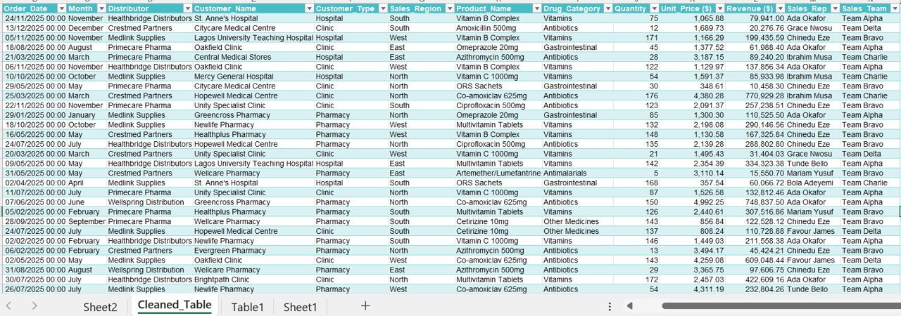
04 · Cleaned dataset
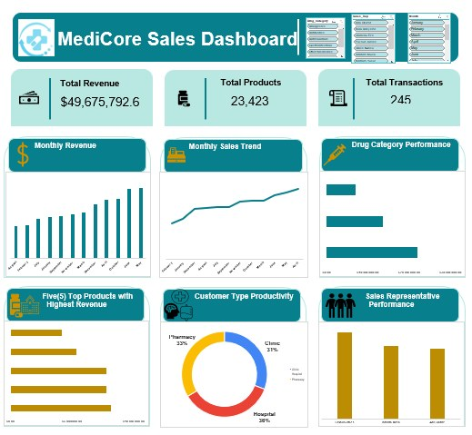
05 · Dashboard development (presentation report unfinished)
Scope note: A dashboard was developed, but the presentation report was not completed. The portfolio will not present the dashboard as a fully completed reporting deliverable or claim unverified business impact.
10Alytics · Healthcare transaction analysisPower BI · Excel · SQL
City Hospital Transaction Analysis
Healthcare Transaction Data Model & Power BI Reporting
Healthcare analytics training project
This project uses a simulated hospital transaction dataset to explore financial and operational information and support leadership-style analysis. The data model connects a central hospital transactions fact table with related dimension tables.
Data model
The transaction fact table is linked to five dimensions:
Doctor: doctor identifier, name, date of birth, gender, contact details and specialty.
Patient: patient identifier, name, date of birth, gender, address and contact details.
Procedure: procedure identifier, procedure name, category and description.
Location: location identifier, city, state, country and postal code.
Calendar: date, month name, quarter, weekday name and year.
The hospital transaction fact table contains transaction ID, date, doctor ID, patient ID, procedure ID, location ID, revenue amount and expenses amount.
Analysis and reporting
Structured the data using fact and dimension tables and explored their relationships.
Used Power BI to develop a transaction dashboard with slicers for interactive exploration.
Calculated and reviewed total revenue, expenses, profit and profit margin.
Explored doctor and patient counts and compared revenue performance across specialties, including highest- and lowest-revenue specialties.
Used Excel formulas and analysis tools including lookups, PivotTables, IF, SUMIF/SUMIFS, COUNTIF/COUNTIFS and charts.
Practised SQL and PostgreSQL in pgAdmin to create and query a relational learning database.
Tools
Power BIExcelSQLPostgreSQLpgAdmin 4Data modellingFact & dimension tablesSlicersPivotTables
Portfolio integrity: This is a simulated healthcare transaction analysis training project. The available project notes support the data model, tools and measures explored, but do not provide verified numerical findings or evidence of deployment in a real hospital. No KPI totals or clinical outcomes are presented as achieved results.
City Hospital project evidence
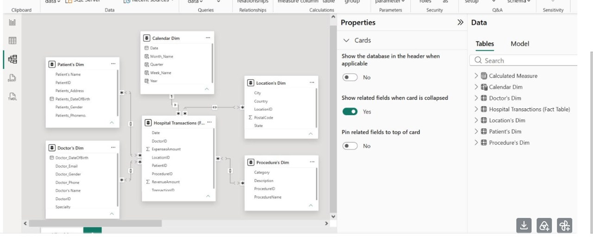
01 · Relational data model
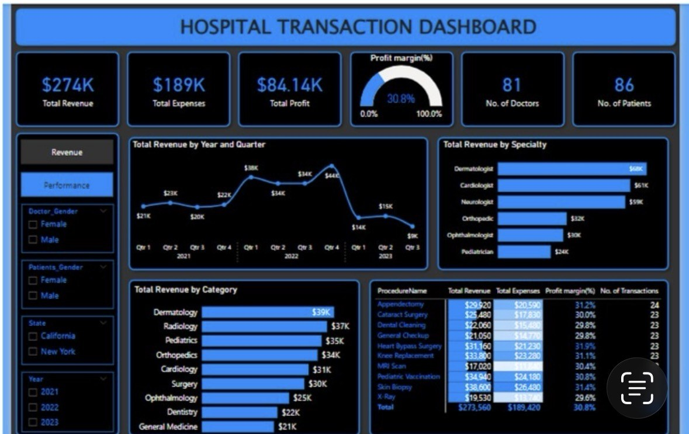
02 · Revenue dashboard
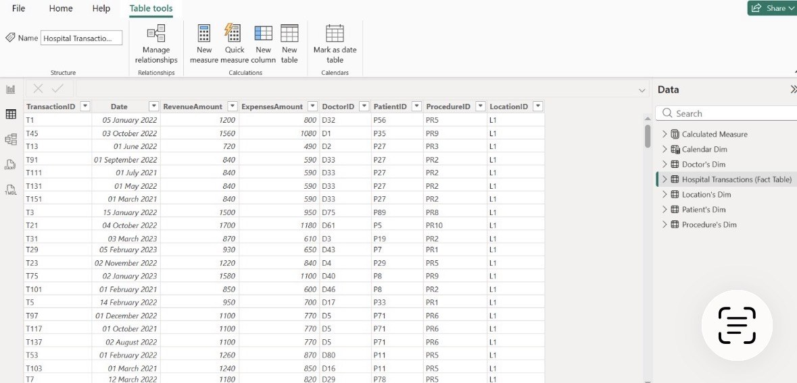
03 · Dashboard development
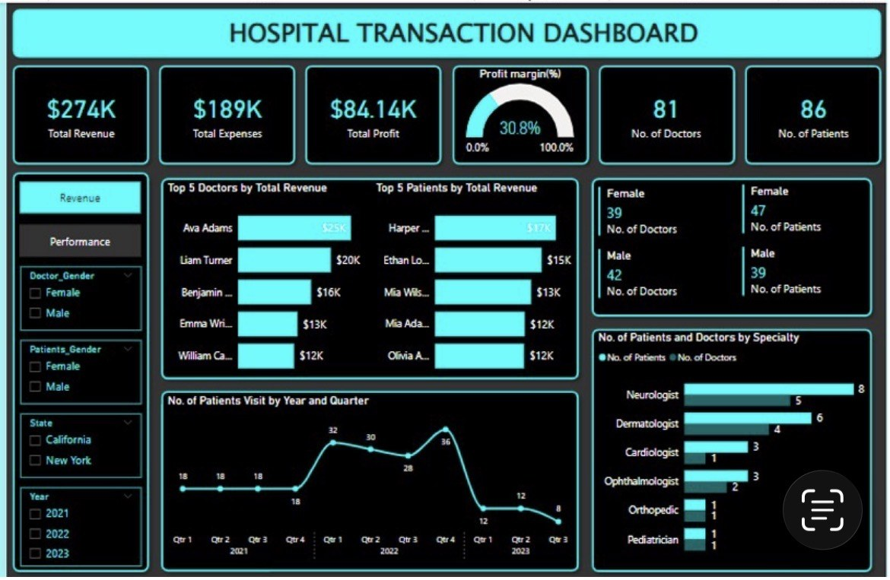
04 · Transaction dashboard
Spreadsheet analyticsExcel
Data cleaning, PivotTables & reporting
Practical Excel work includes preparing structured datasets, reviewing data quality, applying lookup functions, using PivotTables and creating summary views to explore business questions.
My ApexPharma capstone provides a complete example of this workflow, from raw sales records through analysis and dashboard reporting.
Data cleaningPower QueryTRIMFind & ReplaceData validationPivotTables
Business intelligencePower BI
Power BI dashboard development
Developing practical Power BI skills through training and dashboard exercises, including working with structured datasets, selecting visualisations and using slicers to explore information.
This is a developing capability area. A standalone Power BI project and verified dashboard evidence will be added when ready for publication.
Data modelling conceptsVisual reportingDashboard designInteractive filtering
Database practiceSQL · PostgreSQL
SQL and relational data practice
Installed PostgreSQL and pgAdmin 4, created a learning database and practised SQL using relational training data, including a hospital transaction fact-table structure.
This records training and hands-on practice, not a production database deployment.
SQLPostgreSQLpgAdmin 4Relational datasets
Future projectHealthcare analytics
NHS hospital waiting-times analysis
A developing project idea to explore NHS hospital waiting-time information using publicly available data, with Excel, SQL, Power BI and Python as potential tools.
Project in planning / development. No findings or outcomes are claimed at this stage.
Analytical developmentPython · R · SAS
Programming and statistical tools
Exploring Python using PyCharm, alongside exposure to R and SAS as part of wider data and digital learning.
These tools are presented as learning and exploration; proficiency will be refined as practical project evidence is added.
Supporting Excel practiceAMAlytics
AMAlytics – Excel Practice Evidence Gallery
A supporting collection of workbook evidence showing practical spreadsheet skills developed through AMAlytics exercises. This sits within the wider Data Analysis section and complements the featured analytics projects; it is not presented as a separate major project.
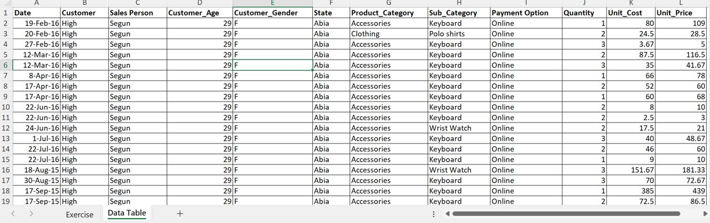
01 · Raw dataset
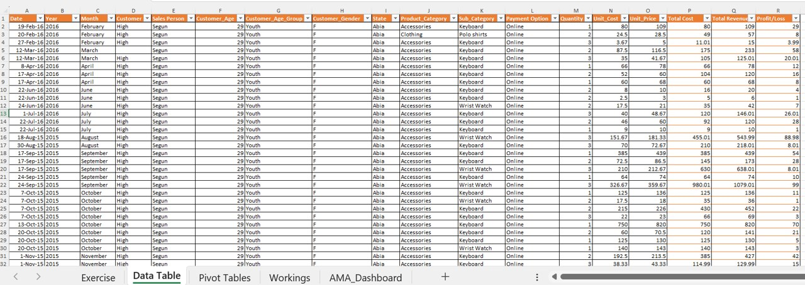
02 · Cleaned dataset
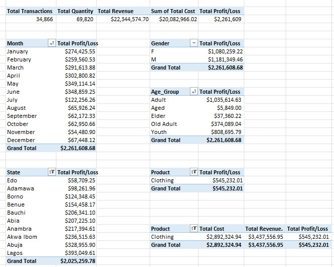
03 · PivotTables and analysis
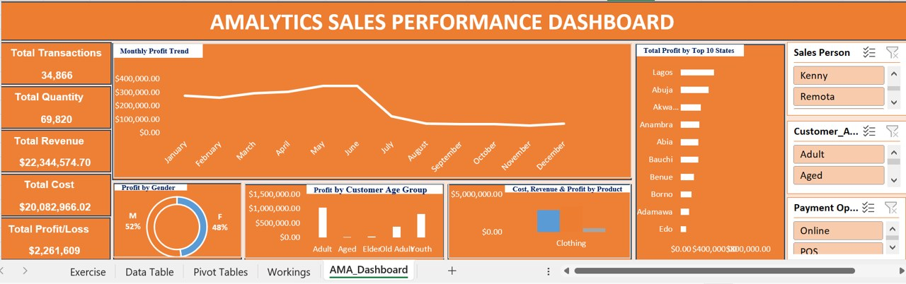
04 · Sales performance dashboard
Dashboard figures visible in the supplied screenshot: 34,866 transactions; 69,820 units; total revenue of $22,344,574.70; total cost of $20,082,966.02; and total profit/loss of $2,261,609 (as displayed on the dashboard). The dashboard also shows a gender split of 52% male and 48% female. These are figures shown in the training workbook dashboard, not audited business results.
\n
Portfolio integrity: Completed capstone findings are distinguished from ongoing learning and future project ideas. ApexPharma figures describe the supplied training dataset; they are not audited company results or proof of business impact in a live organisation.